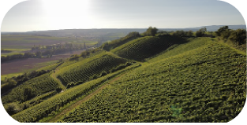
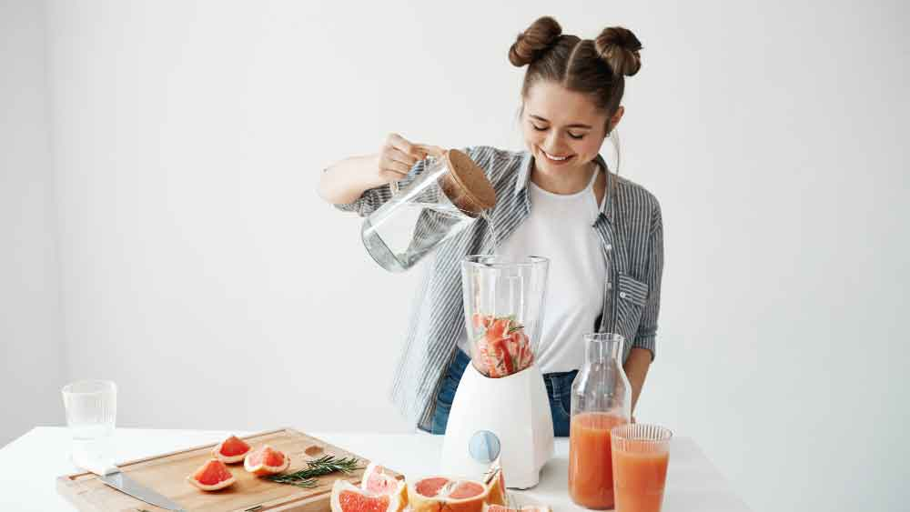
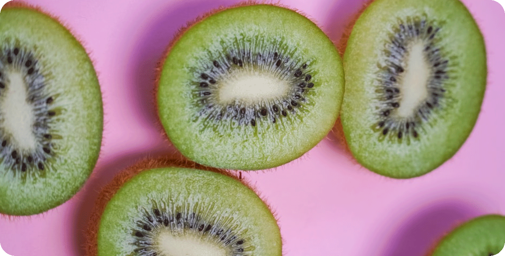
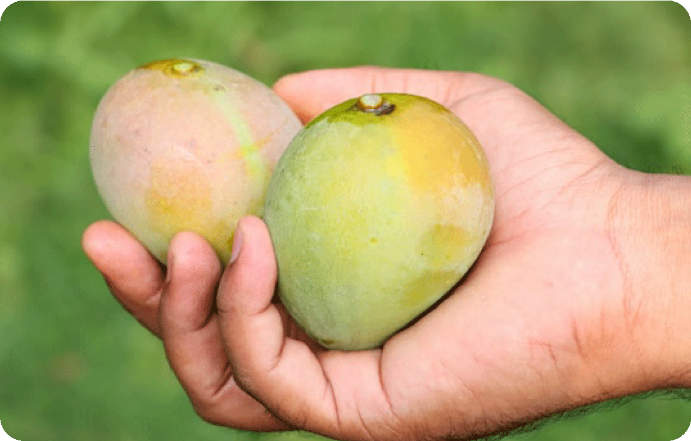

Our Mission
We are committed to providing organic, plant-based juices that refresh, nourish,heal and energize your body. Our mission is to offer high-quality, nutritious drinks that benefit both your health and the planet.

Our Owner Petunia

the heart of Penny Juice, Petunia. a wellness advocate and juice enthusiast who believes that good health starts with simple, natural ingredients. Inspired by her love for fresh fruits, vibrant flavors, and holistic well-being,
Mood Enhancers
Our special blends of fruits and vegetables are designed to naturally boost your mood and energy levels while boosting your mood and spirit. Discover the power of organic ingredients that nourish both body and mind.

Farm Fresh

We source our ingredients from sustainable farms to ensure every bottle of Penny Juice is fresh, organic, and good for the environment. Learn more about our farm-to-bottle process.